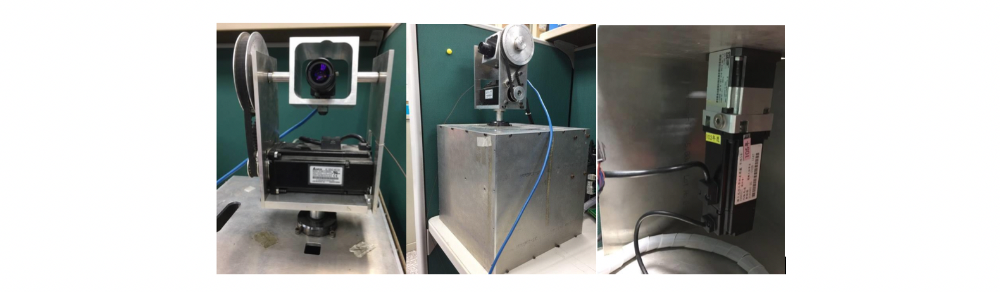
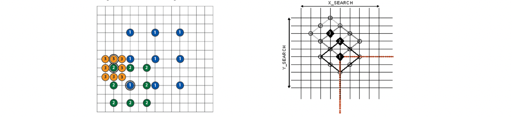
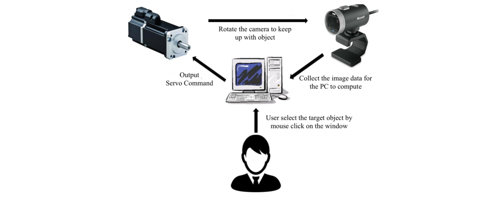
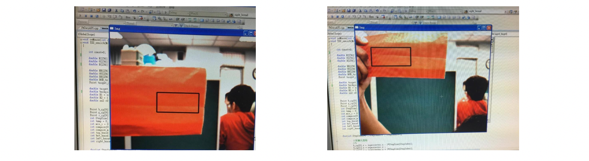

Tracking System Realized on the Pan-Tilt Platform
DOWNLOAD PDFOur original idea is to develop an automatic tracking system to track the performer or speaker on the stage and record the image data simultaneously so that we don’t have to spend additional labor to control the camera manually. Besides, the Pan-Tilt platform has 2 degree of freedom controlled by two servos respectively which can make the camera move according to the direction of up and down and the direction of right and left at the same time. In this project, I worked on the Microsoft Visual Studio and program in C/C++ and OpenCV. I tried to integrate the servo commands such as PID control and the computer vision algorithm into a distributed user interface. In this document, I only introduce the rough concept of my project.

Three Step Search
As the name suggest, there are three steps in this algorithm represented in the left picture with 1,2,3 respectively. At the first step, we initially make the nine points scatter averagely in the input picture, then we compare the target image with the same image size on the nine point to find the most matched position; from this example, we can see we find the most similar point is the left-bottom one. At the second step, we regard this point as the center and scale other eight points; afterward, we repeat the first step’s procedure and calculate the similarity between the target image and the image with the center in eight points. And the third step is same as the second step. Finally, we will obtain the position in the ground image that most match the target image. This method gives us a more efficient tracking algorithm because we don’t need to compare the image data from the first pixel to the last pixel.

Diamond Search
As the right picture suggests, you can see the graph is like the diamond. I introduce Diamond-Search for the first three steps. First, we generally choose the center of the ground image as the first point and then we calculate the other eight point surrounded like a diamond to find the most matched point with the input target image. Second, in the picture, we see the number two is the most similar point with the target image and we choose this point as the center in second step. Afterward, we compare the other five points with the target image and find the most similar point. It should be noticed that we only need to calculate the other five points because we have other three points’ data from the first step. It is the reason why this method can be efficient as a tracking algorithm. The third step is totally the same as the second step but the calculation is only about three points because we have calculated other five points at the precious step. The following steps will cost at most five points amount.
Information Structure
The design of the system is for users to track what they want in the monitor. For instance, if user want to track a bird, then he just needs to frame up the bird by intuitive mouse click and the system will begin to track the bird automatically. The information structure show on the below. To begin with, the user chooses the target object, then the system will try to keep the object showing up in the center of the window by controlling the servo and being calculated by the tracking algorithm. This simple manipulation is based on interviewing many our classmates and friends in the lab. We think the usability is the advantage of this simple system.

Results
I only put the part of results here. In the picture, we can see our target object is the red envelope. When we moved the envelope, the system will output commands to the servo so as to keep the object in the center of window. Additionally, because we add other features such as HOG and different image data type, the system will not detect the person wearing the red T-shirt on the right-bottom of the window, suggesting that our tracking algorithm is not following the color and can effectively detect the object to some extent. However, this is just a simple tracking system, so it cannot be compared with other state-of-the-art methods. From this project, we found that the design flow should be planned carefully at the first step because if our system cannot be easily manipulated by users, the efforts will be in vain. That’s why I think we should always take human issues and user needs into account.

Difficulties & Conclusion
There still exists obstacles in this system. The first one is hardware design. As the picture on the top suggests, the mobility of this system is limited to the wire, so if the servo rotate over 180 degree, the wires will be the hindrance to further follow the target object. Actually, our hardware is very old but maybe this is the chance for me to learn the basic concept of the Pan-Tilt platform. The other difficulty is that other state-of-the-art algorithms have been published in nowadays and with the hardware development, the deep learning in computer vision has more profound effects on this area. By this project, I realized many perspectives behind such system and will try to break the barriers in the future.